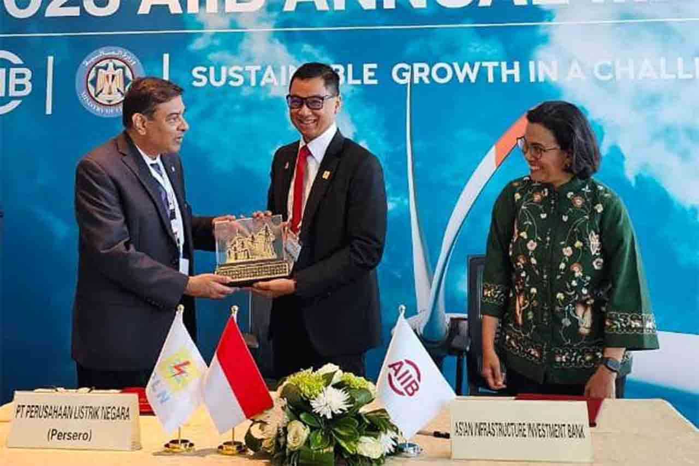
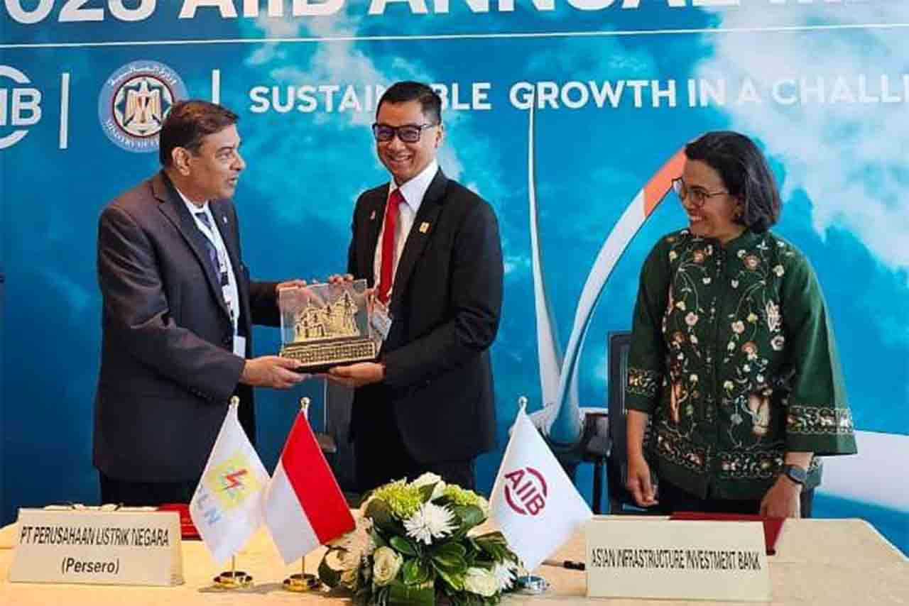

Asian Infrastructure Investment Bank (AIIB) adalah lembaga keuangan multilateral yang didirikan untuk mendukung pembangunan infrastruktur dan mendorong konektivitas ekonomi di kawasan Asia dan kawasan lain dengan mendanai program. Yang berfokus pada proyek yang berkontribusi pada pembangunan berkelanjutan dan pertumbuhan ekonomi global. Tujuan utama pada AIIB adalah mendanakan proyek pembangunan infrastruktur, pembangunan berkelanjutan, pengurangan kemiskinan, serta peningkatan konektivitas. AIIB memprioritaskan inovasi pada infrastruktur digital serta infrastruktur yang menghubungkan wilayah dengan jaring transportasi yang dapat meningkatkan perdagangan dan investasi antar negara. AIIB menjalankan tugas dan misi nya secara berkelanjutan, efisiensi dan inklusivitas yang mendukung SDGs dan berpengaruh banyak dalam terdorongnya goal ke-9 SDGs.
Salah satu proyek yang didanai oleh AIIB adalah Regional Infrastructure Development Fund (RIDF). Ini merupakan program yang bertujuan untuk mendukung pembangunan infrastruktur di daerah melalui pendanaan jangka panjang. Melalui program ini, pemerintah daerah mendapatkan akses ke pendanaan jangka panjang untuk proyek-proyek yang strategis dan berkelanjutan. Fokus utama RIDF adalah pada infrastruktur dasar seperti transportasi, energi, air bersih, dan sanitasi yang dapat mempercepat pertumbuhan ekonomi dan meningkatkan kualitas hidup masyarakat di daerah. Program ini menjadi bagian dari upaya pemerintah untuk memperkuat konektivitas nasional dan mengurangi kesenjangan pembangunan antar wilayah.
Melalui pembangunan infrastruktur yang lebih baik, proyek ini juga menciptakan lapangan kerja baru dan mendorong pertumbuhan ekonomi secara lokal. Dengan konektivitas yang lebih baik, wilayah yang sebelumnya terisolasi dapat berpartisipasi dalam aktivitas ekonomi nasional, sehingga mempercepat pemerataan pembangunan dan mengurangi ketimpangan sosial.
RIDF secara langsung juga mendukung dan mendorong pencapaian Sustainable Development Goal (SDG) terutama pada tujuan No. 9 yang berfokus pada pembangunan infrastruktur yang tangguh, industrialisasi inklusif, dan meningkatkan inovasi. Dengan menyediakan pendanaan bagi pembangunan infrastruktur berkualitas. Teknologi dan inovasi yang diterapkan dalam proyek RIDF juga mendukung penggunaan sumber daya secara efisien dan berkelanjutan yang berperan sangat penting.
Salah satu hal yang mempercepat pembangunan daerah adalah peran strategis RIDF dalam meningkatkan daya saing Indonesia secara global. Dengan infrastruktur berkelanjutan, RIDF dapat menciptakan lingkungan yang mendukung pertumbuhan ekonomi dan berinovasi. Maka program RIDF tidak hanya berkontribusi pada pembangunan daerah tetapi juga menjadi landasan bagi keberhasilan pembangunan nasional yang lebih inklusif dan berkeadilan. Yang merupakan pendorong dari SDGs goal ke-9.